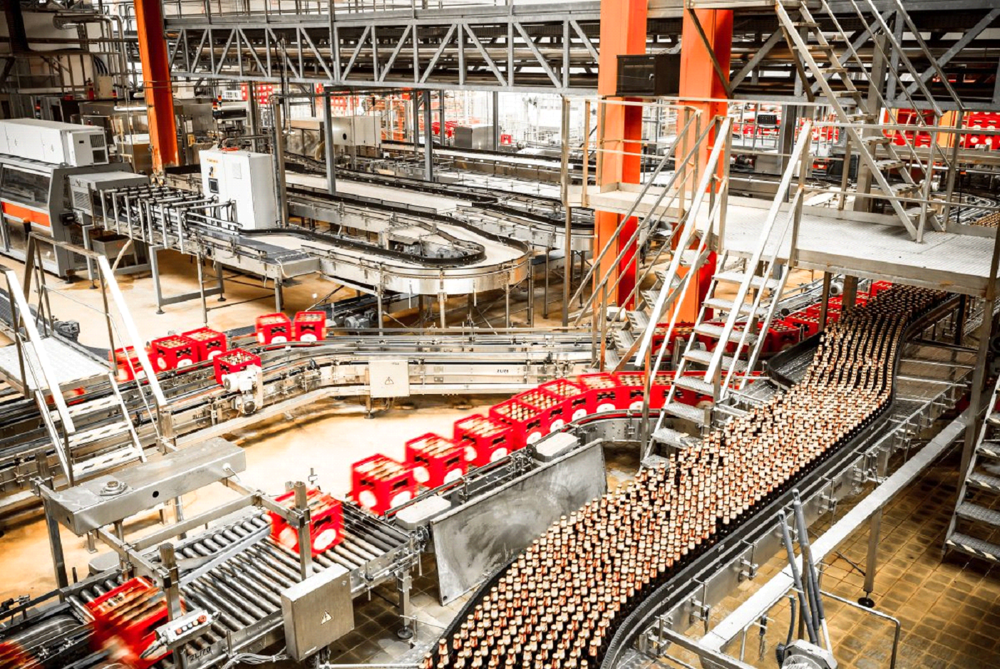

Manchetes


Reportagens

Capitalismo
O que os filósofos pensavam e pensam sobre esse sistema econômico.
Médicos na idade média
Quais eram as dificuldades e o que faziam?

As profissões
Quais suas mudanças com o avanço da técnologia.

Foodtechs e seus objetivos
Descubra o que são foodtechs e conheça um pouco sobre a fazenda futuro

Indústrias alimentícias pelo mundo
Conheça um pouco sobre as indústrias mais conhecidas do mundo

Química nos alimentos
Descubra as reações químicas que acontecem na produção de alimentos

O surpreendente Crescimento da Prática de Atividades Físicas
Motivos do crescimento e os benéficos da prática

Descobrindo Caminhos Profissionais
Unisinos faz feira chamada “Conecta”, onde nela foi possível visitar os cursos da faculdade

Desvendando a inteligência emocional: sua importância atualmente
O que é, sua importância, como desenvolver e seu resumo
Mundo do trabalho
Médicos na idade média
Quais eram as dificuldades e o que faziam?
Capitalismo
O que os filósofos pensavam e pensam sobre esse sistema econômico.
As profissões
Quais suas mudanças com o avanço da técnologia

Culinária
Foodtechs e seus objetivos
Descubra o que são foodtechs e conheça um pouco sobre a fazenda futuro
Indústrias alimentícias pelo mundo
Conheça um pouco sobre as indústrias mais conhecidas do mundo
Química nos alimentos
Descubra as reações químicas que acontecem na produção de alimentos


Entretenimento/Cultura
O surpreendente Crescimento da Prática de Atividades Físicas
Motivos do crescimento e os benéficos da prática
Descobrindo Caminhos Profissionais
Unisinos faz feira chamada “Conecta”, onde nela foi possível visitar os cursos